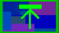
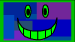
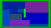
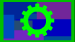

|




|
Contributors and Thanks
When a project goes on-line,
it is almost impossible so say thanks to everyone involved. Everyone who
has sent help, fixes, bugs, and suggestions has contributed to the success
of Kyra. I'm always afraid of missing someone, so please ping me if you
have been left out of the contributors -- it was almost certainly oversight!
Great thanks to everyone on
the SDL and SDL_Image
crew that made the package what it is. The scope of Kyra would be much
less interesting without it.
Kyra 2.0
- Dave Leimbach has been involved
for so long and contibruted so much that I'm no longer going to thank
him. ;-)
- SkyFlash sent in bugs (including
a nasty GUI system crash), some great suggestions, a new widget, and
useful feedback about the new Kyra 2 system.
- Tim Meyer provided some
a nice widget implementation and tested the widget system.
- Alexander Enchevich sent
some compiler logs that helped fixed some irritating compilation issues,
that should help lots of folks.
- Andreas Wuest pointed out
that the API naming conventions needed to be both documented and fixed.
(Which, in general, they should be on both counts now.)
- Robert Lemmen has proposed
a plan to make Kyra better for dynamic linking and distributions. The
work is currently still TODO, but nevertheless well thought out feedback
and a good plan for the future.
Kyra 1.6
- Thanks Eugen Treise for
a bunch of help with the OpenGL color transformation bug, as well as
general bug feedback in general.
- David Leimbach but together
the autotools code.
- Alvaro Lopez Ortega sent
in a bunch of patches to autotools and general improvements.
Kyra 1.5.1
- A very exciting release
for collaboration!
- Waba, Paul, and Miguel with
the Arianne group really pushed the widgets, as well as providing feedback
and ideas on Direct Encoding. Thanks very much for all that input...and
check out Kyra in Arianne! They also have GUI widgets in progress.
- David Leimbach with help
from Ulrich Eckhardt are working on autotools support. Available in
a release soon!
- And, as always, all the
important feedback and ideas on the Forums and Mailing list.
Kyra 1.5
- David Leimbach provided
the much improved Makefiles.
- And Everyone who contributes,
with ideas, questions, and enthusiasm on the SourceForge discussion
and mail list.
Kyra
1.4
- David Leimbach and Cliffor
Benoist, and the Dragonspeace project continues to provide valuable
support and feedback.
- Lee Patterson had many useful
suggestions, and contributed feedback and testing.
- Jeff W. tested and sent
in ideas.
Kyra 1.3
- The Dragonspeace project
contributed lots of ideas for Kyra, especially Clifford Benoist and
David Leimbach, who have contributed ideas, fixes to the makefiles,
and bug reports.
- Thanks to Karl Bartel and
David Leimbach for DFont and SFont help.
- Lee Patterson added valuable
critique to the test versions of 1.3.3.
- ...and everyone who write
with suggestions and ideas which is what makes the whole thing interesting.
Kyra 1.2
- Cody Raspen, found and fixed
the "sprite editor doesn't save" bug.
- Sven Garbade submitted fixes
for the make files, and introduced 'sdl-configure'.
- Rigel and Rob Powell provided
feedback and bug reports.
- SDL_Console
exists in Kyra in a modified form. Thanks to Garret Banuk for that code.
|